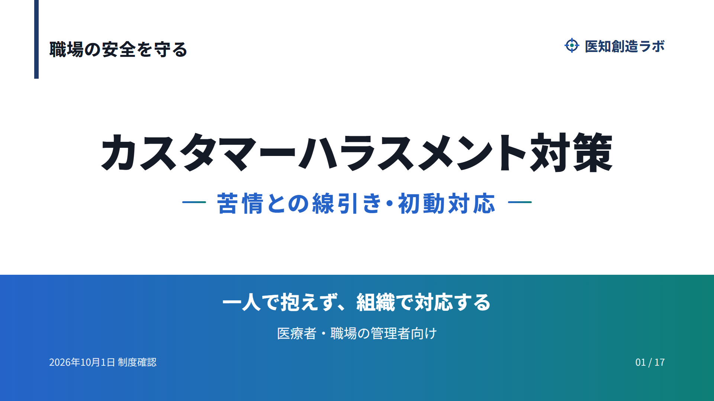

<!DOCTYPE html><html lang="ja"><meta charset="utf-8"><meta name="viewport" content="width=device-width,initial-scale=1"><title>カスタマーハラスメント対策｜スライド</title><style>*{box-sizing:border-box}body{font-family:Meiryo,sans-serif;margin:0;background:#edf3f7;color:#18354c}main{max-width:1440px;margin:auto;padding:18px}h1{font-size:clamp(20px,3vw,28px)}img{display:block;width:100%;height:auto;background:white;box-shadow:0 4px 18px #18354c18}nav{display:flex;gap:10px;align-items:center;justify-content:center;margin:18px 0}button,select{font:inherit;padding:10px;border-radius:8px;border:1px solid #b3c6d3;background:white}select{min-width:0;max-width:65%}button{cursor:pointer}a{color:#2877a7}footer{line-height:1.8;font-size:14px}</style><main><h1>カスタマーハラスメント対策</h1><p>苦情との線引き・初動対応／2026年10月1日確認</p><nav><button id="prev" aria-label="前のスライド">←</button><select id="pick" aria-label="スライドを選ぶ"><option value="0">1. 医知創造ラボ</option><option value="1">2. 個人の我慢に頼らない。</option><option value="2">3. 2026年10月1日から対策が義務。</option><option value="3">4. 相手・言動・就業環境で判断。</option><option value="4">5. 要求の内容と、伝え方を分けて見る。</option><option value="5">6. 合理的配慮の申し出はカスハラではない。</option><option value="6">7. 調査では10.8％が経験。</option><option value="7">8. 安全確保 → 引き継ぎ → 記録。</option><option value="8">9. 内容を聞く姿勢と、行動の境界を伝える。</option><option value="9">10. 評価語だけでなく、具体的な言動を残す。</option><option value="10">11. 職員の安全と、必要な医療を両立。</option><option value="11">12. 新たな診療を断る判断には条件がある。</option><option value="12">13. 方針・相談・対応をつなぐ。</option><option value="13">14. 対応を引き継いだ後も、支援を続ける。</option><option value="14">15. 厚労省の原資料で制度と条件を確認。</option><option value="15">16. 線引き・安全・組織対応。</option><option value="16">17. ご視聴ありがとうございました。</option></select><button id="next" aria-label="次のスライド">→</button></nav><p id="position" aria-live="polite">1 / 17</p><footer><p><a href="https://www.youtube.com/watch?v=Oo9aCUkA2go" target="_blank" rel="noopener">解説動画をYouTubeで見る</a> ／ <a href="../">スライド一覧へ</a></p>医知創造ラボ。一般的な制度解説です。個別の対応は施設の管理者・専門家と相談してください。<br>資料：<a href="https://www.mhlw.go.jp/web/t_doc?dataId=75ac0814&amp;dataType=0&amp;pageNo=1">厚労省カスハラ防止指針</a>・<a href="https://www.mhlw.go.jp/content/11910000/001541317.pdf">実態調査</a>・<a href="https://www.mhlw.go.jp/content/12201000/001459190.pdf">応招義務通知収録資料</a>。</footer></main><script>var titles=["医知創造ラボ", "個人の我慢に頼らない。", "2026年10月1日から対策が義務。", "相手・言動・就業環境で判断。", "要求の内容と、伝え方を分けて見る。", "合理的配慮の申し出はカスハラではない。", "調査では10.8％が経験。", "安全確保 → 引き継ぎ → 記録。", "内容を聞く姿勢と、行動の境界を伝える。", "評価語だけでなく、具体的な言動を残す。", "職員の安全と、必要な医療を両立。", "新たな診療を断る判断には条件がある。", "方針・相談・対応をつなぐ。", "対応を引き継いだ後も、支援を続ける。", "厚労省の原資料で制度と条件を確認。", "線引き・安全・組織対応。", "ご視聴ありがとうございました。"];var current=0;function show(n){current=Math.max(0,Math.min(16,n));document.getElementById('slide').src='slide-'+String(current+1).padStart(2,'0')+'.png';document.getElementById('slide').alt=(current+1)+'枚目 '+titles[current];document.getElementById('pick').value=current;document.getElementById('position').textContent=(current+1)+' / 17';document.getElementById('prev').disabled=current===0;document.getElementById('next').disabled=current===16;}document.getElementById('prev').onclick=function(){show(current-1)};document.getElementById('next').onclick=function(){show(current+1)};document.getElementById('pick').onchange=function(){show(Number(this.value))};document.addEventListener('keydown',function(e){if(e.key==='ArrowRight')show(current+1);if(e.key==='ArrowLeft')show(current-1)});show(0);</script></html>